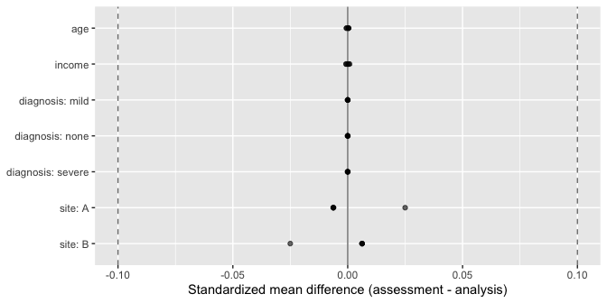

balancesample makes training/testing splits and cross-validation folds that are similar on several variables at once. The results are rsample objects, so you can use them with tune and the rest of tidymodels.
rsample can stratify on one variable. If you need folds that match on age, income, and diagnosis together, rsample cannot do that. balancesample fills this gap with four methods:
| Method | What it does | Package |
|---|---|---|
"anticlust" (default) |
Anticlustering with the k-plus objective (anticlust::fast_anticlustering()), which matches the means and variances of the sets. |
anticlust |
"twinning" |
Data twinning, which splits the data into sets with similar distributions. | twinning |
"rerandomize" |
Draws random splits and keeps the first one with a small Mahalanobis imbalance (Morgan and Rubin, 2012). | none |
"interaction" |
Crosses quantile bins of all variables and stratifies at random. This is a baseline. | none |
twinning is a suggested package. If you select method = "twinning" and it is not installed, balancesample asks you to install it.
Installation
Install the development version from GitHub:
# install.packages("pak")
pak::pak("jmgirard/balancesample")Example
This example uses simulated data with two skewed numeric variables and two categorical variables.
library(balancesample)
set.seed(2026)
n <- 400
d <- data.frame(
age = rgamma(n, shape = 4, rate = 0.1),
income = rlnorm(n, meanlog = 10, sdlog = 0.6),
diagnosis = sample(c("none", "mild", "severe"), n, TRUE, prob = c(0.6, 0.3, 0.1)),
site = sample(c("A", "B"), n, TRUE)
)
d$outcome <- 0.05 * d$age + 0.3 * log(d$income) + rnorm(n)balanced_vfold_cv() takes the columns to balance in balance. Categorical columns in exact are stratified exactly: in each fold, the count of each level combination is the floor or the ceiling of its proportional share of that fold. With group, these are counts of groups, not rows.
folds <- balanced_vfold_cv(
d,
v = 5,
balance = c(age, income, diagnosis),
exact = site
)
folds
#> # 5-fold balanced cross-validation (anticlust), stratified by site
#> # A tibble: 5 × 2
#> splits id
#> <list> <chr>
#> 1 <split [320/80]> Fold1
#> 2 <split [320/80]> Fold2
#> 3 <split [320/80]> Fold3
#> 4 <split [320/80]> Fold4
#> 5 <split [320/80]> Fold5balance_check() reports the standardized mean difference (SMD) of each variable in each fold. The SMD compares the assessment set with the analysis set. It also reports the energy distance, which compares the whole multivariate distribution. The function works with any rsample object, so you can compare balanced folds with ordinary folds.
balance_check(folds)
#> # Balance check: 5 splits, max |SMD| = 0.025, mean energy distance = 0.0203
#> # A tibble: 40 × 5
#> id variable level statistic value
#> <chr> <chr> <chr> <chr> <dbl>
#> 1 Fold1 age <NA> smd -0.000600
#> 2 Fold1 income <NA> smd -0.000770
#> 3 Fold1 diagnosis mild smd 0
#> 4 Fold1 diagnosis none smd 0
#> 5 Fold1 diagnosis severe smd 0
#> 6 Fold1 site A smd -0.00625
#> 7 Fold1 site B smd 0.00625
#> 8 Fold1 <NA> <NA> energy 0.0180
#> 9 Fold2 age <NA> smd 0.000412
#> 10 Fold2 income <NA> smd -0.000580
#> # ℹ 30 more rows
random_folds <- rsample::vfold_cv(d, v = 5)
balance_check(random_folds, age, income, diagnosis, site)
#> # Balance check: 5 splits, max |SMD| = 0.302, mean energy distance = 0.0653
#> # A tibble: 40 × 5
#> id variable level statistic value
#> <chr> <chr> <chr> <chr> <dbl>
#> 1 Fold1 age <NA> smd 0.00739
#> 2 Fold1 income <NA> smd 0.0505
#> 3 Fold1 diagnosis mild smd -0.257
#> 4 Fold1 diagnosis none smd 0.302
#> 5 Fold1 diagnosis severe smd -0.109
#> 6 Fold1 site A smd -0.163
#> 7 Fold1 site B smd 0.163
#> 8 Fold1 <NA> <NA> energy 0.0878
#> 9 Fold2 age <NA> smd -0.0286
#> 10 Fold2 income <NA> smd -0.0968
#> # ℹ 30 more rowsUse autoplot() to see the SMD values. The dashed lines are at -0.1 and 0.1.
library(ggplot2)
autoplot(balance_check(folds))
The folds work with tune. You must attach balancesample with library(), because tune finds the function that made the folds by its name.
library(tune)
library(parsnip)
res <- fit_resamples(
linear_reg(),
outcome ~ age + income + diagnosis,
resamples = folds
)
collect_metrics(res)
#> # A tibble: 2 × 6
#> .metric .estimator mean n std_err .config
#> <chr> <chr> <dbl> <int> <dbl> <chr>
#> 1 rmse standard 1.01 5 0.00969 pre0_mod0_post0
#> 2 rsq standard 0.504 5 0.0191 pre0_mod0_post0balanced_initial_split() makes one balanced training/testing split.
split <- balanced_initial_split(d, prop = 3 / 4, balance = c(age, income), method = "twinning")
split
#> <Training/Testing/Total>
#> <300/100/400>
balance_check(split)
#> # Balance check: 1 split, max |SMD| = 0.0118, mean energy distance = 0.00206
#> # A tibble: 3 × 5
#> id variable level statistic value
#> <chr> <chr> <chr> <chr> <dbl>
#> 1 Split age <NA> smd -0.00875
#> 2 Split income <NA> smd 0.0118
#> 3 Split <NA> <NA> energy 0.00206balanced_initial_validation_split() makes one balanced training/validation/testing split. Pass it to rsample::validation_set() to tune on the validation set.
split3 <- balanced_initial_validation_split(d, prop = c(0.6, 0.2), balance = c(age, income))
split3
#> <Training/Validation/Testing/Total>
#> <240/80/80/400>
balance_check(split3)
#> # Balance check: 2 splits, max |SMD| = 6.82e-05, mean energy distance = 0.0158
#> # A tibble: 6 × 5
#> id variable level statistic value
#> <chr> <chr> <chr> <chr> <dbl>
#> 1 Validation age <NA> smd 0.0000184
#> 2 Validation income <NA> smd -0.00000979
#> 3 Validation <NA> <NA> energy 0.0192
#> 4 Testing age <NA> smd 0.0000682
#> 5 Testing income <NA> smd -0.0000322
#> 6 Testing <NA> <NA> energy 0.0124Groups
Use group to keep all rows of a group (for example, a participant or a hospital) in the same set. Each group becomes one row with its group means and its log size. The method assigns the groups, and each row then gets the set of its group. The number of groups per set follows the target proportions, so the number of rows per set is only approximate.
d$person <- sample(1:80, n, TRUE)
grouped <- balanced_vfold_cv(d, v = 5, balance = c(age, income), group = person)
grouped
#> # 5-fold balanced cross-validation (anticlust), grouped by person
#> # A tibble: 5 × 2
#> splits id
#> <list> <chr>
#> 1 <split [320/80]> Fold1
#> 2 <split [319/81]> Fold2
#> 3 <split [319/81]> Fold3
#> 4 <split [320/80]> Fold4
#> 5 <split [322/78]> Fold5anticlust has a must_link argument for groups. balancesample does not use it, because it needs fold sizes that the groups can fill exactly, and it was slow in tests.
Options
Pass method options in options. See ?balanced_vfold_cv for the options of each method.
balanced_vfold_cv(d, balance = c(age, income), options = list(moments = 4, k_neighbours = 20))
balanced_vfold_cv(d, v = 4, balance = c(age, income), method = "twinning", options = list(strategy = 2))
balanced_vfold_cv(d, balance = c(age, income), method = "rerandomize", options = list(p_accept = 0.01))By default, anticlust tries every swap, so its run time grows quickly with the number of rows. In one test with 10 folds and four variables, it took 0.8 seconds for 1,000 rows, 2.3 seconds for 3,000 rows, and 8.3 seconds for 10,000 rows. With k_neighbours = 20, the same runs took 0.2, 0.6, and 1.1 seconds. Twinning took less than 0.2 seconds for all three.
Background
In 2021, I asked for multivariate stratification in rsample (tidymodels/rsample#266). Julia Silge suggested an extension package, and balancesample is that package. Its design follows spatialsample: it builds folds with rsample::make_splits() and rsample::new_rset().
Two other rsample issues are related. tidymodels/rsample#371 proposes twinning as the multi-variable strata method for rsample. tidymodels/rsample#109 records Max Kuhn’s concern that crossed strata become sparse. The "interaction" method is in balancesample so that you can see this problem next to the other methods.
Prior art
-
groupdata2::fold()makes folds that balance one numeric variable, stratify one categorical variable, and keep groups together. -
splitTools::multi_strata()makes one stratification variable from several variables, by crossing them or by k-means clustering.
References
Morgan, K. L., & Rubin, D. B. (2012). Rerandomization to improve covariate balance in experiments. The Annals of Statistics, 40(2), 1263-1282.
Papenberg, M. (2024). K-plus anticlustering: An improved k-means criterion for maximizing between-group similarity. British Journal of Mathematical and Statistical Psychology, 77(1), 80-102.
Papenberg, M., & Klau, G. W. (2021). Using anticlustering to partition data sets into equivalent parts. Psychological Methods, 26(2), 161-174.
Vakayil, A., & Joseph, V. R. (2022). Data twinning. Statistical Analysis and Data Mining, 15(5), 598-610.